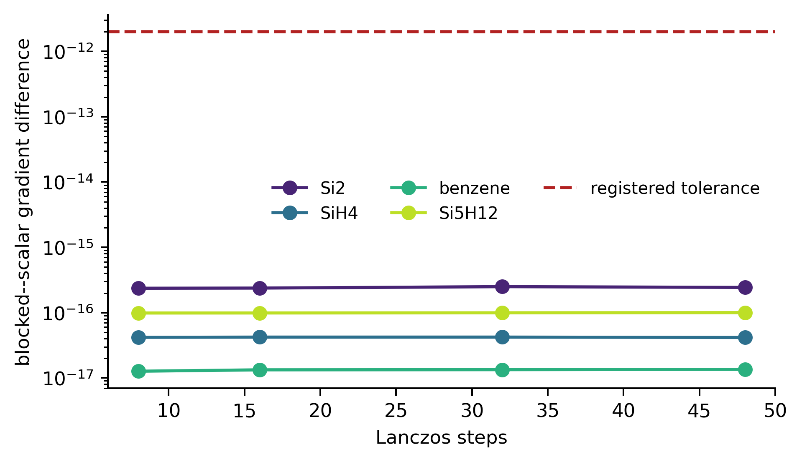
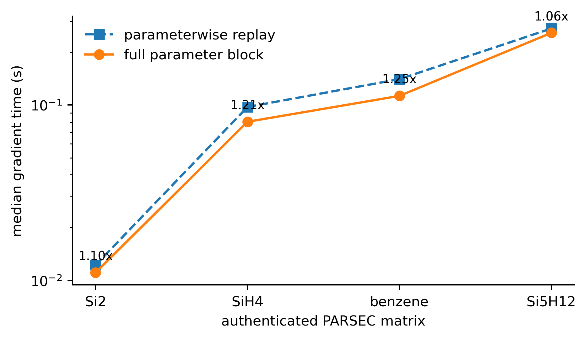
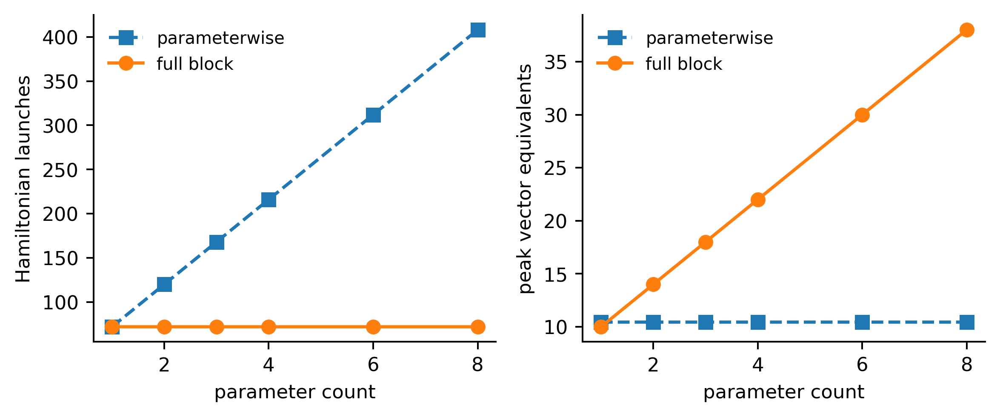
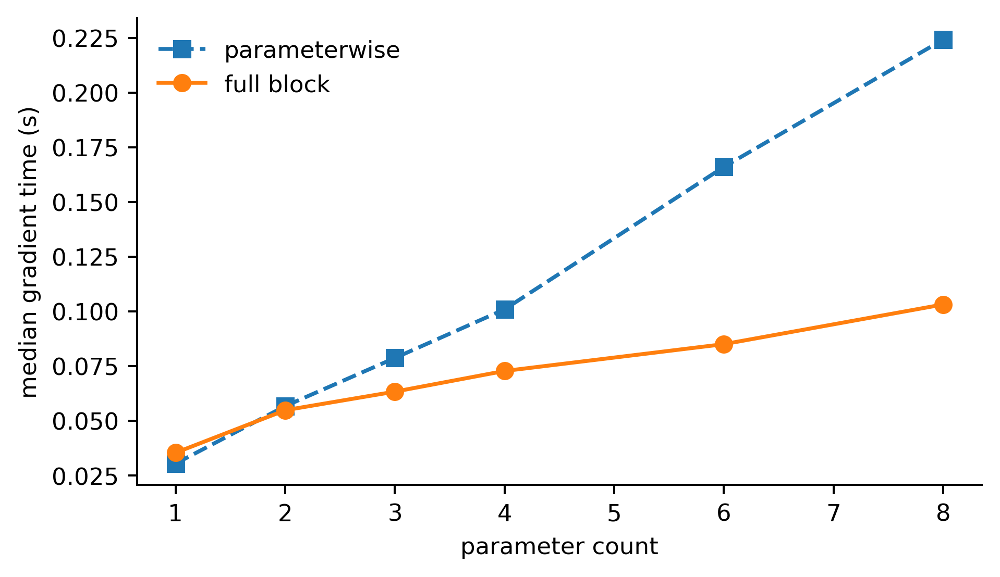

Exact result and measured consequence
3mfull-block launches
2.50e−16maximum gradient difference
1.25×largest matrix speedup
408 → 72launches at p = 8
Full blocking exchanges lower operator-launch count for higher multivector storage. Launch reduction is exact; wall time remains host and kernel dependent.
Evidence organized by claim




Authenticated matrix timings
| Matrix | Parameterwise | Full block | Speedup |
|---|---|---|---|
| Si2 | 0.0122 s | 0.0111 s | 1.10× |
| SiH4 | 0.0974 s | 0.0803 s | 1.21× |
| benzene | 0.1404 s | 0.1127 s | 1.25× |
| Si5H12 | 0.2727 s | 0.2575 s | 1.06× |
Replay
cd code
python -m pip install -e '.[test,reproduce]'
python -m pytest -q
cd ..
rc-krylov-block-study --verifySemantic hash: 3dd1bab58150136019fd61ac6ceed799f152dabdc194d68ce61145dc85770213